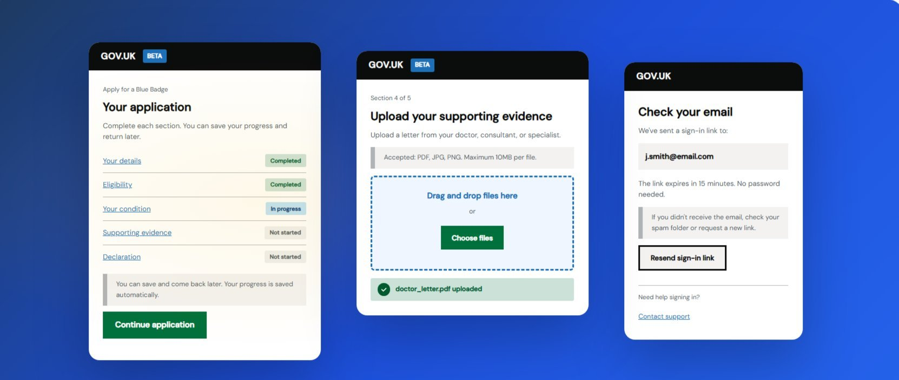

Blue Badge Digital Companion
A complete redesign of the Blue Badge scheme digital service for 2.5 million eligible users in England — streamlining access to disabled parking permits through GDS-compliant, WCAG 2.2 AA accessible design.

The Problem
The paper trail was failing people who needed help most
The existing Blue Badge application process was paper-heavy, confusing, and inaccessible. Drop-off rates were high, support queries were overwhelming call centres, and many eligible applicants — the very people who needed the scheme most — never completed their application at all.
The challenge was to redesign the end-to-end digital service using GDS principles and the GOV.UK Design System — building something genuinely usable by people with a wide range of physical and cognitive disabilities, from the first touchpoint to final confirmation.
"I tried to apply online but it kept asking me questions I didn't understand. I gave up after 20 minutes and called the council instead. They told me I'd have to start again."
— Blue Badge applicant, research participant- High application drop-off — eligible people abandoning the process mid-way
- Medical evidence requirements were unclear — applicants didn't know what to upload
- Session timeouts lost progress with no recovery mechanism
- Inconsistent status updates driving repeat calls to support teams
- Screen reader and keyboard navigation issues excluding users with disabilities
My Role
Leading design across research, accessibility, and delivery
As Lead Product Designer, I was responsible for the end-to-end design of the service — from discovery through to handoff. I worked within an agile, multidisciplinary team including a Product Manager, Tech Lead, QA Engineer, Content Designer, and User Researcher, applying GOV.UK Design System patterns and GDS service standards throughout.
Accessibility was not a phase at the end — it was embedded from the very first sketch. Every design decision was validated against WCAG 2.2 AA criteria, and I led accessibility audits and assistive technology testing throughout delivery.
Research
Understanding the people behind the application
Before designing anything, I ran a structured discovery phase: reviewing existing analytics to identify where people dropped off, shadowing phone support agents to understand the most common queries, and conducting contextual interviews with applicants across three eligibility categories.
Research methods: applicant interviews (12 participants, including people with mobility impairments, visual impairments, and cognitive disabilities), expert interviews with council processing staff, analytics review of the existing digital service, and a heuristic audit of the current application flow.


Insights
Defining the design challenge
Problem Statement: How might we redesign the Blue Badge application service so that eligible people — including those with physical, visual, and cognitive disabilities — can complete their application independently, with confidence, without needing to call for support?
Two primary personas anchored design decisions throughout: Gerald Thomas (72, retired, applying due to limited mobility — confident on paper, anxious online, needs clear progress indicators and plain language), and Sarah Chen (28, applying on behalf of her son with autism — tech-savvy but frustrated by medical jargon and unclear requirements).


Ideation
GDS patterns applied — one thing per page
The GOV.UK Design System's question-per-page pattern was the structural backbone of the redesign — each screen asking only what was needed, progressively revealing complexity only when necessary. I mapped the full service architecture across four eligibility paths before sketching any screens.

Design & Validation
From GDS wireframes to accessible high-fidelity
Low-fidelity wireframes were tested early and often with real users — including people using screen readers, switch access devices, and keyboard-only navigation. I used the GOV.UK Design System's existing components wherever possible, only introducing new patterns when an existing one genuinely couldn't meet user needs.

Each WCAG 2.2 AA criterion was evidenced during design — not retrospectively. Key accessibility decisions: focus management on every page transition, colour contrast ratios validated at 4.5:1 minimum for all text, visible persistent labels on all form inputs, session timeout warnings at 2 and 5 minutes, and error messages written in plain language identifying the specific field and how to fix it.


Results
Measurable impact at scale
100% task completion rate in moderated usability testing across all user groups, including participants using screen readers, keyboard-only navigation, and switch access devices. Users described the redesigned service as "much clearer" and "I finally understood what they were asking for."
"This is exactly what the Blue Badge service needed. Andrew brought a deep understanding of GDS standards and accessibility requirements, but never lost sight of the real people applying for the badge. The reduction in support calls alone has freed up significant resource in our team — and the feedback from applicants has been overwhelmingly positive."
Takeaways